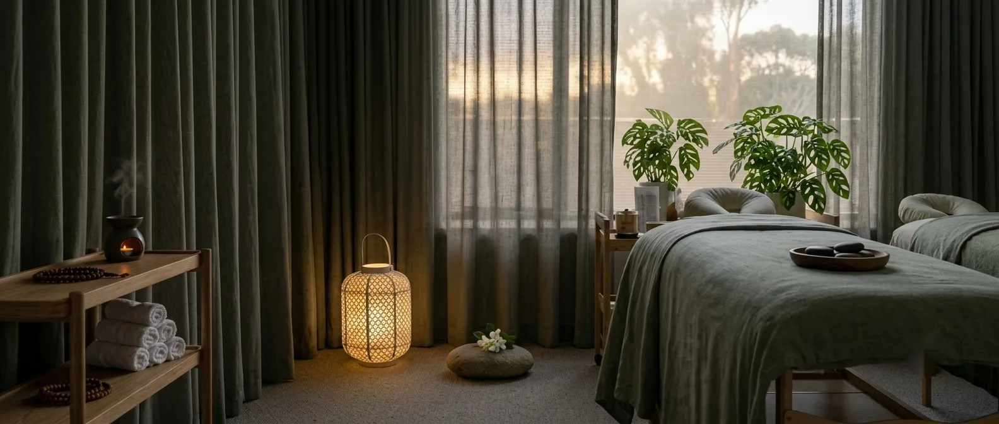
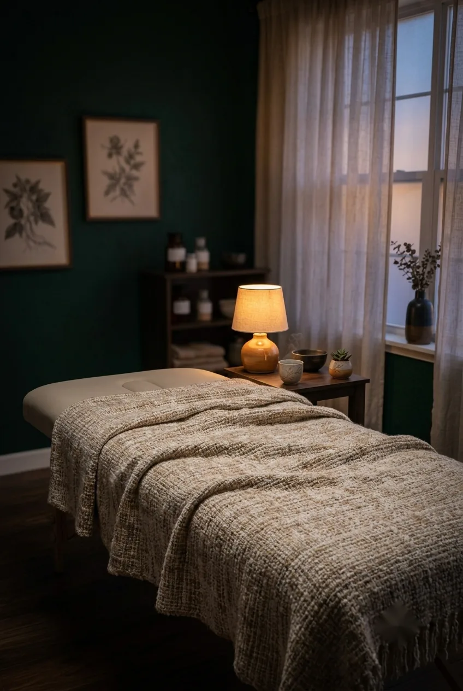
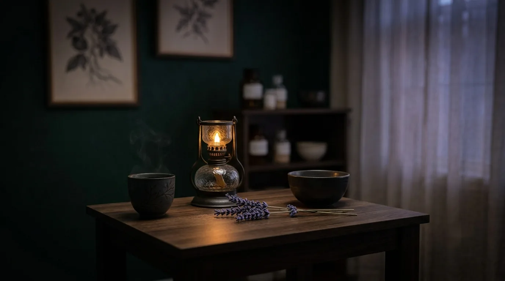

Rest & recovery
Acupuncture for Sleep
Support for disrupted or restless sleep, considered alongside stress, mood and your overall health.

- Common signs
- Restless or shallow sleep
- Best for
- Disrupted sleep, insomnia
- Hours
- Tue 12–5pm
- Where
- Mermaid Beach
How we approach it
We'll start with a proper conversation about how you've been sleeping, how wound-up you feel, and what your days actually look like. A Chinese medicine assessment is completed before any treatment begins, so your session reflects your presentation rather than a fixed formula.
Treatment is gentle acupuncture in a warm, quiet room, then time to simply rest with the needles in place, the sort of environment the nervous system reads as safe. Many people drift off, which is often the most useful thing that happens all week.
What's included
- A proper conversation about your sleep, stress and daily rhythm
- A Chinese medicine assessment that looks at the bigger picture, not sleep alone
- Gentle acupuncture in a warm, quiet room built for winding down
- Realistic suggestions to support sleep between visits
Treatments are provided by an AHPRA-registered practitioner. New patients welcome.

Further reading
Read the full story.
Our blog post on acupuncture for stress and sleep goes into more detail on settling a busy nervous system, and our page on acupuncture for stress covers the other half of that picture.

Good to know
Common questions.
Can acupuncture fix my sleep?
No honest practitioner will promise that. Acupuncture isn't a cure for insomnia, but many people find it supports a nervous system that's too wound-up to settle at night, especially alongside good sleep habits.
Do you treat insomnia specifically, or just general poor sleep?
Both are welcome reasons to book. Whether it's diagnosed insomnia or sleep that's just not as restful as it should be, your assessment will consider the wider picture, including stress and mood, not sleep in isolation.
Will one session fix my sleep?
Unlikely, and we won't promise it will. Supporting sleep is usually about building a rhythm over a few sessions rather than chasing a one-off result.
Should I stop taking my sleep medication?
Please don't change any medication without speaking to your GP first. Acupuncture can sit alongside your current care; it isn't a reason to alter it yourself.
What happens during a sleep-focused appointment?
A conversation about how you've been sleeping and what your days look like, a Chinese medicine assessment, then gentle acupuncture in a warm, quiet room with time to simply rest. Many people drift off during this part.
Designed to help you feel at ease
Ready when you are.
If you've never had acupuncture before, it's completely normal to have questions. Your first appointment is unhurried, giving us time to understand your concerns and ensure you feel comfortable before treatment begins.